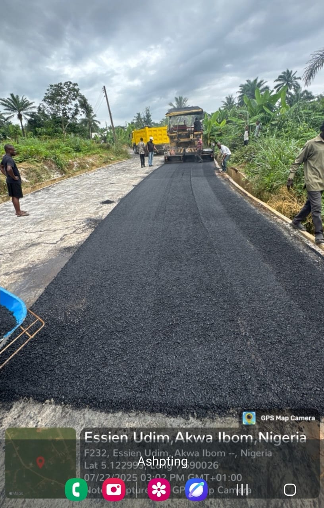

Review and mobilisation
We establish scope, access, programme, site controls and the resources required for the agreed works.
Road and supporting civil works planned around real site requirements.

Admoltech undertakes road construction and supporting civil works for private and public-sector requirements in Abuja and across Nigeria. Project planning considers the site condition, traffic expectations, access, drainage and the specified finish.
The exact work sequence and materials depend on the approved design, site investigation and contract scope.
We coordinate the work around the approved requirements and the conditions encountered on site.
We establish scope, access, programme, site controls and the resources required for the agreed works.
Earthworks, drainage, pavement layers and surfacing activities are coordinated according to the project specification.
Progress and completed work are reviewed against the agreed scope before final handover.
Road and civil scopes may serve estates, institutional premises, commercial facilities, access routes and wider public infrastructure projects.
Share the location, available drawings or scope and the intended project outcome so we can review the next step.
Request a Project Discussion